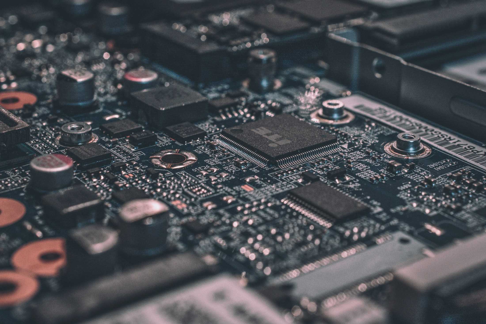
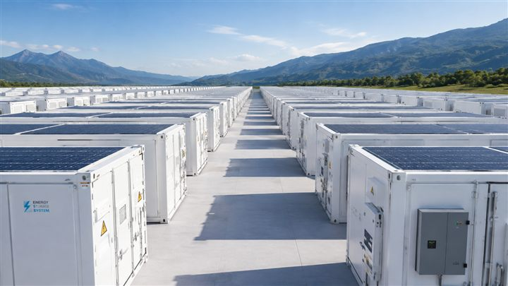
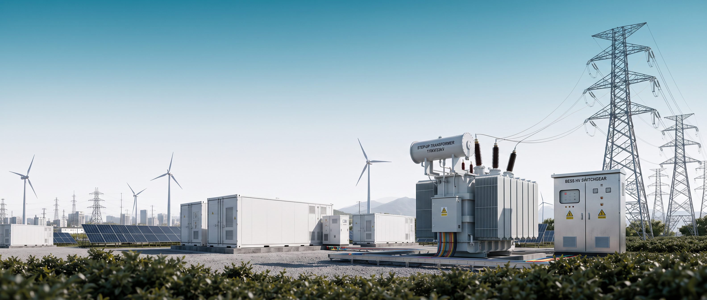

MILLISECOND CONTROL,
BUILT IN-HOUSE
BUILT IN-HOUSE
自主研發 EMS
毫秒級反應的控制算法，即時協調電芯、PCS 與電網訊號；參數化架構彈性對應台電與多國電網規範，韌體遠端更新，功能隨市場規則同步演進。

整合型儲能解決方案
ENERGY STORAGE FOR TAIWAN'S GRID
Energy Storage OS · Taiwan
AI · Powered穩定電力，創新未來引領能源轉型的專業夥伴
專業儲能技術提升再生能源滲透率，同時守護電網穩定
電池儲能系統整合 — 工程建置・控制系統・專業維運・電力市場服務
GO株式会社のGX(グリーントランスフォーメーション)事業では、
EVの導入と運行による脱炭素化を支援します。
これまでGOが先行して推進してきた
「タクシー産業GXプロジェクト」で得られた知見と自社のテクノロジーを活用し、
運行実態に即したエネルギーマネジメントシステムを構築。
商用車のGXを通じて、企業における脱炭素化への取り組みに貢献します。

01 · BATTERY CONTAINER
20 呎 ISO 規格電池貨櫃 15 座成列，內含電池模組堆疊與熱管理系統，幹管把每櫃串上直流母線。
詳細を見る →
ALL · SYSTEM INTEGRATION
太陽能、儲能、變電、控制、風電與輸電六個環節，由同一套 EMS 統一調度，整合成一座可調度的電力資產。
詳細を見る →核心優勢與定位 · Why Us